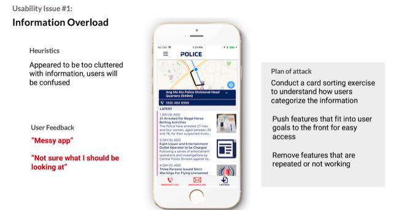

Police@SG is an informational app that aims to increase safety awareness and community engagement amongst members of public. It also allows the public to transact with the police on the go. While the client is looking for a visual redesign of the app, we saw that there were multiple usability issues with the current app, compounded with a lack of focus for the app content.
We looked at the revamp in 3 stages — Understand current usability issues, Identify a possible content focus for the app, Improve the information architecture.
We conducted a heuristics evaluation of the current app to uncover usability problems, followed by usability testing of the current app to validate items identified from the first activity.
5 main usability issues were uncovered, of which the most significant one the information overload perceived by users.
Through 20 user interviews, we analyzed the findings and formed a key persona whose needs fit well with the current app offerings.
The persona we formed is a caregiver for their family, especially for their young and elderly family members, and would be interested in the crime news and statistics around the areas where they frequent. Because of their busy lifestyle, if there are any administrative transactions with SPF to be done, he/she is comfortable and would rather complete it online as opposed to heading to the nearest police centre.
Our findings also allowed us to finetune the app's potential value proposition — users can read and receive crime news and alerts in the areas that they are concerned with, so that they are more aware and can alert their loved ones of the same as well. This fit in well with the neighbourhood police center concept, and would give it a unique perspective as compared to normal digital news outlets.
A content audit showed the following issues:
Based on the user interviews done prior, we proposed a site map and conducted a hybrid card sorting activity to test our hypotheses. The final site map brought out the features which were most aligned to the objectives of the app to the front of the app as a bottom navigation tab and pushed the less relevant information to the back of the app.
With the findings of our research, the app was redesigned with SPF's corporate style guide to have a clearer navigation and present a clearer app focus for our key persona.
The prototype was tested with 10 users and showed significant improvements in task completion and information discovery.